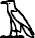
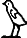
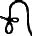
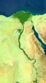
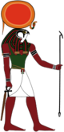
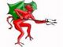

De: La Frikipedia, la enciclopedia extremadamente seria.
De: La Frikipedia, la enciclopedia extremadamente seria. De: La Frikipedia, la enciclopedia extremadamente seria.
| De la serie imperios antiguos: | |||||
|   | |||||
| |||||
| Lema: ¡¡¡Ra, Ra, Ra, Egipto vencerá!!! | |||||
| Himno: ¡Lealtad al faraón, y que me joda un montón!
| |||||
| 
| |||||
| Capital(es) | Menfis | ||||
| Mayor ciudad | Alejandría | ||||
| Lenguas oficiales | Jeroglíficos | ||||
| Religión oficial | Un montón de dioses mitad humanos mitad animales (Zoofílicos) | ||||
| Gobierno | Monarquía absoluta | ||||
| Faraón: | Tutankamón | ||||
| Fecha de fundación | Hace chochocientos años | ||||
| Caída | De la punta de una pirámide | ||||
| Edad de oro | con Ramsés | ||||
| Periodo de Estancamiento o reseción | con la Cleo | ||||
| Máxima Extensión | Mucha, pero casi todo es desierto, excepto el Nilo | ||||
| Forma de economía | Venta de sandalias de piel de cocodrilo del Nilo | ||||
| Estados que se despacho | Un | ||||
| Población calculada | 400 millones de gatos y vacas, 30 millones de agricultores del Nilo, 10 millones de sacerdotes, y el faraón y la familia del faraón | ||||
| Moneda | La rosa del desierto | ||||
| Zona horaria | Por aquel entonces los relojes eran de arena | ||||
| Legado(s) | Un par de pirámides con dibujitos raros | ||||
| ¿Por que se vino abajo? | culpen a los Ramones | ||||
| | |||||
El Antiguo Egipto (no confundir con el actual Egipto) fué fundado por Osiris y Ra hacia el 40.000 a.T (antes de Tutankamón), y destruido por los romanos hacia el 30.000 d.T (después de Tutankamón).
Aquí tienen, toda la historia del Egipto de los faraónes, resumida al más puro estilo frikipédico:
Hacia el 30.000 a.T (antes de ferran.h), un faraón llamado momia, se dispuso a unificar Egipto (antes dividida en el Alto Egipto y el Bajo Egipto). El Alto Egipto, estaba gobernada por las personas más altas de Egipto, y se situaban al sur; y el Bajo Egipto, estaba gobernado por los Oompa Loompas, y estaban situados al norte, y estaban gobernadas por las personas altas y los Oompa Loompas desde la creación del Antiguo Egipto por Osiris. Pues bien, este tal Narmer, junto a un gran ejército de mercenarios mauritanos, se dispuso a invadir Egipto por el norte, es decir, empezando por el territorio de los Oompa Loompas. Para acabar con los Oompa Loompas y quitarles el territorio, Narmer, solamente tuvo que sobornarlos congranos de cacao, y los Oompa Loompas, aceptaron encantados, marchándose de Egipto y dirigiéndose asín, hacia el centro de África, donde más tarde se les conocería como pigméos cuando los descubra el señor Willy Wonka. Y para acabar con los egípcios del Alto Egipto (situado al sur), Narmer les ofreció ser jugadores de los equipos de baloncesto americano, y ellos encantados, aceptaron (se dice que entre los habitantes del Alto Egipto estaba Pau Gasol y Michael Jordan). Y asín termina, en el año 29.999 a.T. (antes de Tutankamón), sin ningún muerto y a base de sobornos, la uificación de Egipto.
El periodo arcaico, esta comprendidos por los años 29.999 a.T (antes de Tutankamón) y 20.000 a.T. (antes de Tutankamón), y consta de las dinastías I y II. Sus faraones eran, todos dinosaurios (por lo del periodo triásico, jurásico y arcaico). Pues bien, todos sabréis, que durante el periodo triásico y jurásico los dinosaurios dominaban la tierra, pues en en el periodo arcaico solamente quedaban dinosaurios en Egipto, los cuales eran dueños de este país. Los dinosaurios dominaron Egipto durante más de cinco mil años, que es cuando en el año 20.000 a.T. (antes de Tutankamón), Ra, envía una lluvia de meteoritos a Egipto y termina de extinguir a los dinosaurios (para más información sobre los poderes de los dioses egipcios, vease Age of Mythology); devolviendo asín, el poder de Egipto a los faraones klingon humanos.
El imperio antiguo, comienza en el 20.000 a.T. (antes de Tutankamón) y termina; bueno..., esto se lo desvelaré después. Comprende las dinastías III, IV, V y VI; todas ellas de faraones humanos. Durante este periodo, no ocurrió nada interesante, excepto la visita de Buda al faraón Atshupset III (19.765 a.T. - 19.700 a.T.), de la III dinastía. Otro hecho, fué, cuando el ingeniero de tumbas, llamado Kalimerotatón, inventó la mastab] en el año 19.700 a.T., y la primera persona que fué enterrada al morir fue el faraón antes mencionado, Atshupset III; anteriormente al invento de la mastaba, las momias se arrojaban al río Nilo, o se enterraban en las arenas del desierto. Pero fue en el año 15.000 a.T., cuando los nomos (parientes lejanos de los Oompa Loompas), comienzan a invadir Egipto, terminando con la VI dinastía y el Imperio Antiguo, y comenzando una era, una era llamada, el Primer periodo intermedio.
El primer periodo intermedio, es una parte de la egipcio (lógicamente), llamado Akheminhotstep, y estudió ingeniería de asedio en Tebas. El primer periodo intermedio, finaliza en el año 12.069 a.T. (antes de Tutankamón), con la reconquista de Egipto por los faraones humanos, y la expulsión de los nomos de Egipto; luego, los nomos, no tuvieron más remedio que poblar la península escandinava, de donde luego se harían leyendas escandinavas protagonizadas por estas criaturas.
El imperio medio comprende los años 12.069 a.T. (antes de Tutankamón), con la reconquista de Egipto por los faraones humanos, y el año 6.389 a.T., con la invasión de los hicsos. Durante este periodo, los avances culturales y científicos son claves en la historia de Egipto; como por ejemplo, la invención del primer preservativo, hecho de papiro, aunque luego resultase muy incómoda la práctica. Se cree que un eunuco inventó el preservativo, y que fué hacia el año 10.069 a.T. (antes de Tutankamón). La necesidad de inventar el preservativo, fue, porque un faraón, que reinaba durante el año en que se inventó el preservativo, y que aquel faraón se llamaba Akenaton III, llegó a tener más de mil hijos, desesperado a buscar una solución para parar de dejar embarazadas a todas sus mujeres y concubinas, le pidio a ese eunuco, que inventase el preservativo. También es en esta época, cuado en el año 9.500 a.T. (antes de Tutankamón), los tres hermanos gemelos llamados: Kefrén, Keops y Micerino, son enterrados en las pirámide]s de Gizha a 10 kilómetros del rio Nilo. Esta maravillosa época, finaliza, cuando los hicsos, en el año 6.389 a.T. (antes de Tutankamón), invaden el Bajo Egipto, junto a los judíos.
En el segundo periodo intermedio, el norte de Egipto va ha estar dominado por hicsos y judíos, y estarán en el norte de Egipto desde el año 6.389 a.T., hasta el 3.696 a.T. (antes de Tutankamón). Sus dinastías fueron desde la XIII hasta la XVII. Durante esta época solamente hay guerras de hicsos y judíos, contra los egipcios. No hay ningun invento científico importante, aunque más abajo están todos los avances científicos del Antiguo Egipto. Y termina el apogeo de los judíos y hicsos con la llegada de Ramsés II al poder en el año 3.696 a.T.
Este es el periodo más largo del Antiguo Egipto, y comienza con la expulsión de los judíos de Egipto, es decir, cuando Moíses llama a los de Nada x aquí (programa de Canal Cuatro) y abre el mar en dos partes. Este periodo dura desde el año 3.696 a.T. (con la expulsión de los judíos de Egipto) hasta el año 18 d.T. (con la muerte de un niño que se puso de faraón, al que llamaban Tutankamón). Pues bien, Ramsés II expulsó a los judíos de Egipto, que no se hicieron daño al huír porque hicieron magia y cuales se tubieron que ir a Alemania, donde no escaparon muy bien. Este fué sin duda, el periodo de la historia del Antiguo Egipto, ya que gracias a Ramsés III se consiguió dominar el mundo. Pero su hijo, Tutankamón, que era mongolo (eso explica que muriese a tan temprana edad), se lo vendió a los Asirios y a Alejandro Magno. Tutamkamón murió cuando por error, se tomó un vaso de ácido nítrico, en vez de agua del Nilo, y lo hizo a caso hecho el muy tonto. Y así es como termina la época más maravillosa del Antiguo Egipto.
Pues bien, como hemos mencionado antes, con Tutankamón terminó la cúspide del Antiguo Egipto, y murió al beberse por error un vaso de ácido nítrico. Después, al año siguiente, fué invadida por los persas, con la cual, la religión egipcia (la de Ra, Amón, Osiris, Isis, etc.) dejó de practicarse, y claro, a las gentes del lugar (Egipto) no les gustó eso, así que llamaron a sus colegas los macedonios, liderados por Alejandro Mojón, y le dieron tal paliza que los persas no volvieron ha hacercarse por allí. Pero Alejandro Mojón, siendo un traidor occidental más, quería convertirlos a la religión griega (la de Zéus, Afrodita, Marte, etc.), pero entonces, tubieron que llamar a su amigo Ptoloméo, que le clavó una flecha envenenada en el pecho a Alejandro Mojón, y se establecieron las siguientes dinastías de faraones egipcios, de la XXI a la XXX. Pues entonces, trescientos años apróximadamente después de la expulsión de los macedonios, la faraona Cleopatra (la que sale en los cómics de Astérix), se enamoró de Julio César (famoso emperador romano), y como los romanos tienen un estilo de política como el de los yankis, se creían que Egipto era un territorio más del Imperio. Al enterarse de esto, Cleopatra rompe su noviazgo con Julio César y se va con Perico de los Palotes, y el emperador romano, coje dos pitones, y se las lanza a Cleopatra y a Perico de los Palotes mientras hacían el amor. Al morir Cleopatra, Egipto se anexiona al Imperio Romano, y su historia sería tan apasionante como la del Antiguo Egipto aburrida como la de Estados Unidos de América.
Antes de que miren la cronología, les debo recordar que a.T. significa antes de Tutankamón, y que d.T significa después de Tutankamón.
Los antiguos egipcios, son quizás, los padres de la ciencia, ya que fueron ellos los que empezaron a experimentar cosas raras con chismes raros, y los que inventaron las ecuaciones, que en la actualidad se utilizan para torturar a los alumnos de instituto. Los antiguos egipicios, también han sido los inventores del preservativos, pero este invento solamente sirvió para que la natalidad descendiese un doscientos por cien. Otro de los grandes inventos del Antiguo Egipto fué el papiro, que se utilizaba para limpiarse el culo. Utilizaban el semen como si fuese tipez]. No construyeron solamente las pirámides para enterrar a los faraones, también las construyeron para crear laberintos en su interior y utilizarlos de atracción para parques de atracciones, aunque los que entraban en el laberinto de la pirámide del parque de atracciones, nunca volvían, es decir, se quedaban en el más allá, incluso el faraón que inauguró el primer laberinto de una pirámide de un parque de atracciones, se perdió dentro de él, porque el faraón insistía en que iba a entrar en él, pero al final terminó mal. El pan, es otro de los grandes inventos o descubrimientos de los egipcios, y ayudó a erradicar las ambrunas de todos los gatos divinos del país.
Los egípcios son famosos, sobre todo por sus jeroglíficos, como por ejemplo el de XD. Esto, es una lista de los jeroglíficos egipcios más famosos:
La religión egipcia, es una de las más complicadas de toda la historia de la humanidad. El principio de los tiempos, según los egipcios, ocurrió cuando el dios Atum, se corrió encima de una piedrecita y comenzó a surgir el planeta Tierra y los demas dioses y personas. Aquí tienen la lista de todos los dioses egipcios:
| Imagen | Nombre | Atributos | Castigo |
|---|---|---|---|
| Osiris ("Osiris" para todos y sin ninguna excepción). |
El dios de todos los dioses, un ser superior... . | Doblégate a él si no quieres sufrir las consecuencias, además, sería muchísimo mejor que no lo representases en una ilustración o en una afoto, los egipcios se enfadarían y te cortarían las pelotas. | |
|  | Ra ("Ramón" para los esepapañoles). |
Es el dios sol, y gracias a él nos ponemos morenos y se nos quema la retina. | Si no adoras al faraón, te faltará la luz solar. |
| Amón ("Jamón" para los esepapañoles). |
Es el dios del jamón y de las personas que se llaman Ramón. | Si no adoras a los jamones, te faltarán buenas jamonas para... . | |
|  | Set ("El diablo" para todos). |
Es el dios más cabrón de todos, es decir, es el dios de la muerte, y el enemigo mortal de Osiris y del pueblo egipcio. | Si no eres satánico o heavy, ya puedes hechar a correr, un grupo de satanistas va a por tí. |
| Isis ("Aria Giovanni" para los salidos). |
Es la esposa de Osiris, y por lo tanto, la diosa más enchufada de todas. | Si no eres un salido, no podrás entrar en su | |
| Ptah ("Bob Marley para los esepapañoles). |
Es el dios de los petas, es decir, de los porros, y por eso lleva ese nombre. | Si no eres un fumado, los yonkis iran a por tí. |
Si quieres saber más de la historia del Antiguo Egipto ya que esta información es una mierda mira el artículo Egipto, o si no vete a la Wikipedia, o si no pues lo lees en un libro, o si no... búscate la vida chaval.
Autor(es):